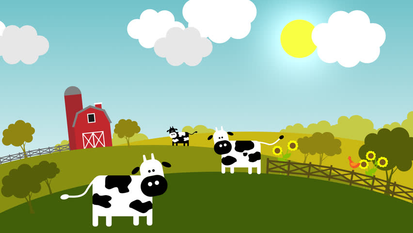

Guardians of the Green
Deforestation and Forest Fires are the biggest enemies of our biggest natural resources, forests and the wildlife that resides there. You are chosen by the Oracle to defend them. Use your skills to develop an IoT based system that will monitor forest fires and/or deforestation rates.

Things that speak
Can you make your car tweet? Can you make your bike update it's Facebook status ? Can your plants leave you a text message when they are thirsty ? Well, if not, now with IoT you surely can give them a tongue. So why not give it a shot Dr Dolittle ?

Farmville
Farming is the most ancient occupation. And now we are giving a chance to you to try it out. No no we don't expect you to sow seeds or plough the field. I guess you guys are too smart for them. So open up your toolkit and design a solution that tackles some of the most common problems related to framing in India. What are they ? Well, you got Google for that.
Robo OP
Can you make a robot that does........ Well frankly that is upto you. It can do anything. So there this is, your miscellaneous category have fun.